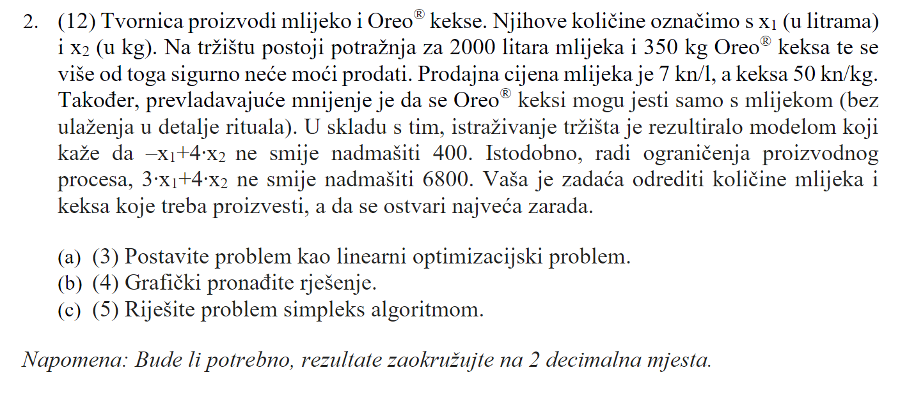
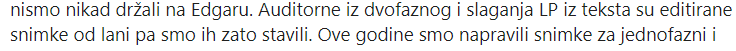

Koliko vremenski traje MI?
niknik 2h ako je za vjerovati pdf-u na materijalima
Provjerene znanja traju 120 minuta (2 sata) + 15 minuta za snimanje (upload) rješenja u sustav Edgar. Studenti koji završe rješavanje prije isteka roka od 120 minuta moraju prvo obavijestiti „čuvara“ te nakon dobivene dozvole mogu snimiti svoja rješenja u sustav Edgar. Rješavanje zadataka nakon isteka 120 minuta nije dozvoljeno. Nakon isteka dodatnih 15 minuta za snimanje rješenja, provjera znanja završava i studenti napuštaju prostoriju.
U gradivu za MI piše sufiksna tablica, šta tu spada?
*** sufiksno polje rekao bih
Je li ima i teoretskih pitanja ili samo zadaci?
anon00 Moze se pojaviti neko teorijsko pitanje, ali velika vecina bodova nece biti teorija. Barem su tako rekli.
niknik Okej, tnx Najvise me bunilo sto im je u pocetku bio plan ⅓ kod, ⅓ zadaci, ⅓ teorija - pa gledam ako su makli kod da je i dalje ostalo dosta teorije, ali gledajuci po proslogodisnjim ispitima skuzio sam da doslovno postoje 1-2 usputna pitanjca
Jel mozemo ocekivati ovakav zadatak na mi? 
mrkva paa mozemo ocekivat jer je prof brcic rjesavao isti zadatak na auditornim vjezbama
mrkva Ako sam dobro shvatio ovaj mail, ne ulazi 
KiflaKiflic al ovaj zadatak se rjesava jednofaznim (naivnim) simpleksom, a to ulazi, kaj ne?
KiflaKiflic znaci onda nam samo moze doc zadatak sa direktno zadanom ciljnom funkcijim i ogranicenjima ili?
Dragi prijatelj strojnog učenja Ovo “graficki pronadite rjesenje” ne bi trebalo ulaziti u ispit, a ja sam shvatio da i izgradnja LP iz tekst isto ne ulazi 🤷♂️
steker mislim da bi mogao doci tekstualni zadatak iz kojeg moramo složiti linearni progam, koji će vjerojatno biti riješiv naivnim simpleksom.
Dragi prijatelj strojnog učenja Možda ko foru daju neki koji nije riješiv naivnim (ili uopće nije linearan program) čisto da pokažemo da radimo sve one korake provjere.
Dragi prijatelj strojnog učenja ne znam kako se sad spominje to slaganje lp iz teksta kad fino ovdje Ptr pise da toga nece bit nego su samo stavili da bude za kasnije ispite
sekiro imaš pravo, moja greška
Oce nam dat te bodove koji pisu na edgaru ili budu nesto dodatno oduzimali